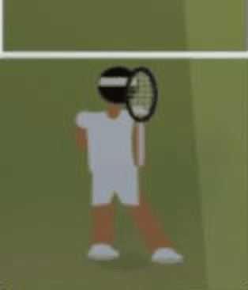
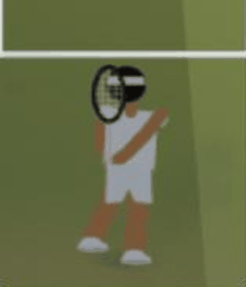
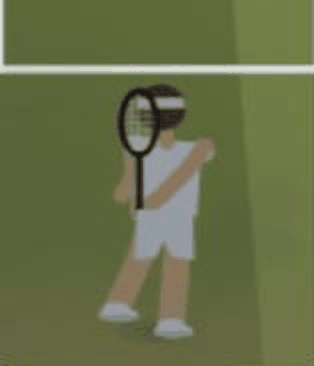

Every frame is the real renderer driven through the real swing, sampled at 16 phases and played
back at about 1/8 speed. Each loop runs forward then back, so the take-back and the finish are both readable.

ForehandAlcaraz · right-handed

Backhand, two-handedboth hands on the grip

Backhand, one-handedFederer · free arm thrown backSlicehigh take-back, knifes down and through